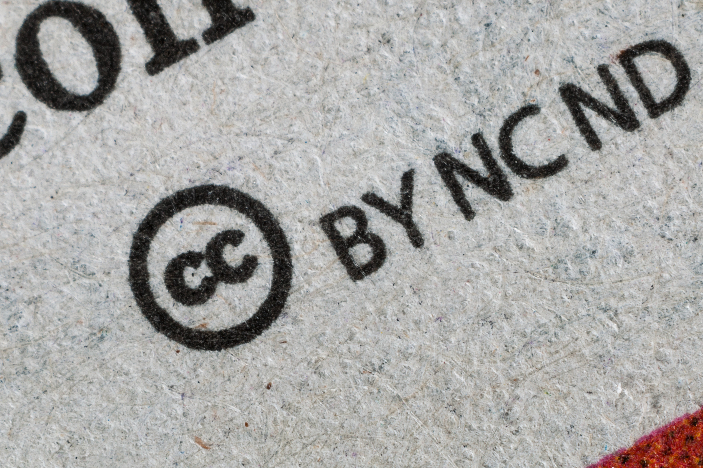

왜 저작권 거래가 어려운가?
지적재산권의 거래는 자유로워야 한다. 저작권을 비롯한 대부분의 지적재산권은 정당한 평가를 받고 있지 못하며, 이는 저작권자들이 불안한 삶을 지속하는 원인이 된다.
만약 내가 금을 가지고 있고, 갑자기 아파트를 구입하기 위해 돈이 필요하다고 가정해보자
우리는 친구 또는 전당포에 금을 맡기고, 필요한 금전을 대여할 수 있다. 이를 법률 용어로 질권이라 한다.
그러나 만약 내가 음악 저작권을 가지고 있다면, 이를 친구 또는 전당포에 맡기고 돈을 빌릴 수 있을까?
아마도 친구와 전당포는 돈을 빌려주길 꺼려할 것이다. 왜 그럴까?
이유는 간단하다. 금은 얼마에 거래되는지 알 수 있다. 그리고 많은 사람들을 통해 거래된다. 다시 말해 환전하기가 용이하다.
그러나 저작권은 어떠한가? 내 음악저작권은 얼마인지 알 수 없다. 그리고 거래할 수 있는 곳도 제한적이다. 저작권을 금전으로 환전해주는 곳은 찾기 어렵다.
이런 이유로 저작권은 담보가 되기 어렵다.
우리는 이 문제를 해결해야 한다.